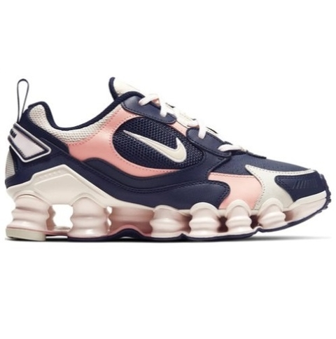

TopImportados
Os Melhores Modelos!!
Nike 12Molas
O 12 Molas ganhou notoriedade logo em seu lançamento em 2003 com seu solado de visual agressivo, contendo a tecnologia de amortecimento shox por toda sua extensão. Já o Nike Shox TL Nova, mantêm o mesmo solado, mas modifica o cabedal com designe mais sutil, composto por malha e sobreposições de couro.